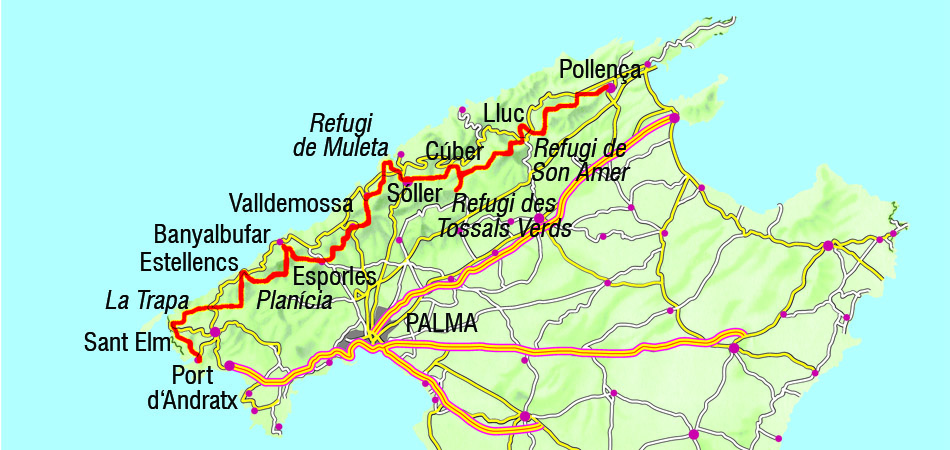

I've started dancing at about 14 years old together with my mom. She was a ballet teacher when she was young and I'm very grateful we got to share a few years and a few stages dancing together. I actually made a little powerpoint presentation to my colleagues so they can have some notion of the close world that is ballet.
Hiphop:
I've started about 2 or 3 years ago, I needed something a little bit "wilder" than ballet and really got the hang of it.
Salsa:
It was a long time I wanted to start salsa (I actually wanted to learn tango but I liked the "social" part of salsa), and started about a year ago. Already went to 2 different schools and some socials (salsa parties). I enjoy salsa but do it as a lowkey hobby.
Singing
Sang in a lot of different stages in France, a few pop choirs in the Netherland but now I am mainly disturbing my neighbours.
Feel free to check out my
instagram account.
Travelling
Click on the image below to check out my polarsteps account. I am not great at keeping up with my travel stories while
travelling, but my statistics are pretty up to date.
Fun fact: I've cycled from south of Belgium to south of France (still took a train due to timing constraints) with tents. I crossed the country in 11 active days, cycling about 800km in total.
Hiking
If you like hiking too, I really recommend the GR routes. My favorite so far is the GR221 that crosses Majorca island.

Swimming
Cooking
Do I dare to say coding...? Let's just generalise to: